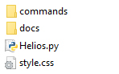

Manually¶
You can also install the files manually by moving the following files/folders in a folder of your choice:
Then you’ll need to execute the following python code in order to run Helios.
import sys
sys.path.append('PATH TO FOLDER')
import Helios
Helios.HeliosGUI()
Change the ‘PATH TO FOLDER’ by the folder where you moved the files.
Now click here to see how you can create a Hotkey in Maya to launch Helios.